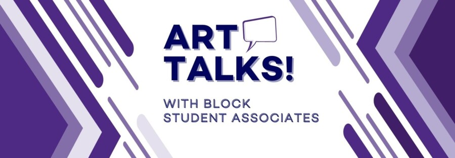

Art Talks! Teresa Montoya’s Tó Łitso (Yellow Water)
Join the Block Museum Student Associates in our galleries for a close look at one or two works on view in Teresa Montoya’s Tó Łitso (Yellow Water): Ten Years after the Gold King Mine Spill. The exhibition explores the enduring consequences of the Gold King Mine spill through photography, sound recordings, water samples, and cartographic data. Combining documentary photographs with scientific data and poetic reflection, Tó Łitso invites viewers to consider water not only as a life-sustaining resource but also as a conduit for histories, stories, and harm.
Block Museum Student Associates (BMSAs) are Northwestern undergraduates representing interdisciplinary fields of study from across the university. In the galleries, BMSAs extend welcome to our exhibitions and permanent collection and engage visitors in conversations about artworks that spark their curiosity.
Participation level – medium, participants are encouraged to respectfully share their own perspectives, thoughts, and questions throughout the Art Talk.
Programs are open to all, on a first-come first-served basis. RSVPs not required, but appreciated.
RSVP
About BMSA Facilitators
Vanya Saksena
Economics and Global Health Studies (2027)